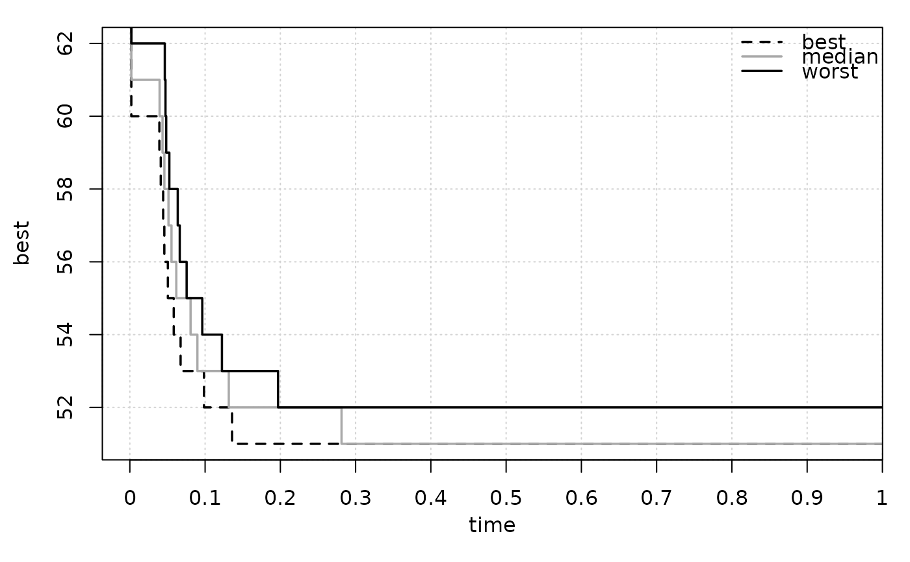
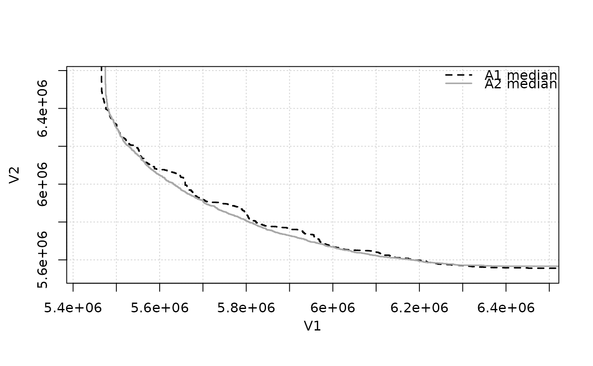
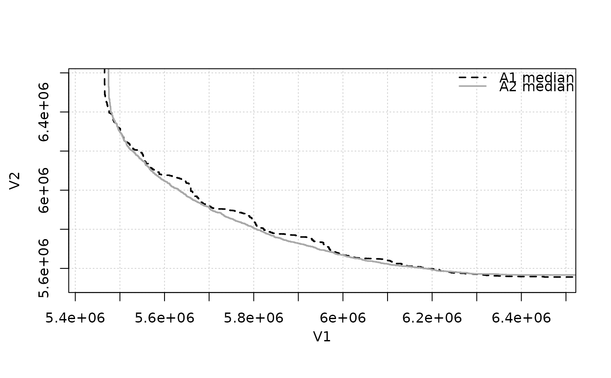

Computation and visualization of the empirical attainment function (EAF) for the analysis of random sets in multi-criterion optimization.
Source:R/eaf-package.R
eaf-package.RdThe empirical attainment function (EAF) describes the probabilistic distribution of the outcomes obtained by a stochastic algorithm in the objective space. This package implements plots of summary attainment surfaces and differences between the first-order EAFs. These plots may be used for exploring the performance of stochastic local search algorithms for biobjective optimization problems and help in identifying certain algorithmic behaviors in a graphical way.
Functions
eafdiffplot() | Empirical attainment function differences |
eafplot() | Plot the Empirical Attainment Function for two objectives |
read_datasets() | Read several data.frame sets |
Data
gcp2x2Metaheuristics for solving the Graph Vertex Coloring Problem
HybridGAResults of Hybrid GA on vanzyl and Richmond water networks
SPEA2minstoptimeRichmondResults of SPEA2 when minimising electrical cost and maximising the minimum idle time of pumps on Richmond water network
Extras are available at system.file(package="eaf"):
extdata | External data sets (see read_datasets) |
scripts/eaf | EAF command-line program |
scripts/eafplot | Perl script to generate plots of attainment surfaces |
scripts/eafdiff | Perl script to generate plots of EAF differences |
Author
Maintainer: Manuel López-Ibáñez manuel.lopez-ibanez@manchester.ac.uk (ORCID)
Authors:
Marco Chiarandini
Carlos Fonseca
Luís Paquete
Thomas Stützle
Other contributors:
Mickaël Binois [contributor]
Examples
data(gcp2x2)
tabucol<-subset(gcp2x2, alg!="TSinN1")
tabucol$alg<-tabucol$alg[drop=TRUE]
eafplot(time+best~run,data=tabucol,subset=tabucol$inst=="DSJC500.5")

eafplot(time+best~run|inst,groups=alg,data=gcp2x2)
 eafplot(time+best~run|inst,groups=alg,data=gcp2x2,
percentiles = c(0,50,100), cex = 1.4, lty = c(2,1,2),lwd = c(2,2,2),
col = c("black","blue","grey50"))
eafplot(time+best~run|inst,groups=alg,data=gcp2x2,
percentiles = c(0,50,100), cex = 1.4, lty = c(2,1,2),lwd = c(2,2,2),
col = c("black","blue","grey50"))
 extdata_path <- system.file(package="eaf","extdata")
A1 <- read_datasets(file.path(extdata_path, "wrots_l100w10_dat"))
A2 <- read_datasets(file.path(extdata_path, "wrots_l10w100_dat"))
eafplot(A1, percentiles=c(50))
extdata_path <- system.file(package="eaf","extdata")
A1 <- read_datasets(file.path(extdata_path, "wrots_l100w10_dat"))
A2 <- read_datasets(file.path(extdata_path, "wrots_l10w100_dat"))
eafplot(A1, percentiles=c(50))
 eafplot(list(A1=A1, A2=A2), percentiles=c(50))

eafdiffplot(A1, A2)
eafplot(list(A1=A1, A2=A2), percentiles=c(50))

eafdiffplot(A1, A2)
 ## Save to a PDF file
# dev.copy2pdf(file="eaf.pdf", onefile=TRUE, width=5, height=4)
## Save to a PDF file
# dev.copy2pdf(file="eaf.pdf", onefile=TRUE, width=5, height=4)